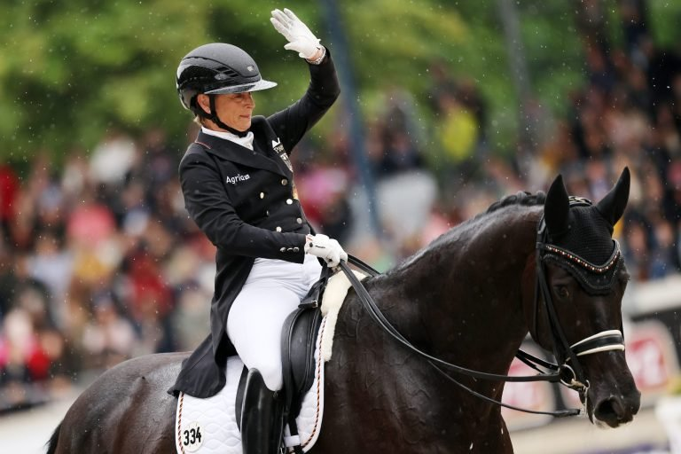

La federación estadounidense designa ocho binomios para optar al Mundial de doma de Aachen
La Federación Ecuestre de Estados Unidos ha confirmado la preselección de ocho binomios que aspiran a integrar el equipo nacional para el Campeonato del Mundo de doma de Aachen, programado entre el 10 y el 15 de agosto. La lista combina veteranos de campeonatos internacionales con caballos en su primera selección.

La Federación Ecuestre de Estados Unidos ha confirmado la preselección de ocho binomios que aspiran a integrar el equipo nacional para el Campeonato del Mundo de doma de Aachen, programado entre el 10 y el 15 de agosto. La lista combina veteranos de campeonatos internacionales con caballos en su primera selección.
Los binomios designados son Meagan Davis con Toronto Lightfoot, Ashley Holzer con Hawtins San Floriana, Jordan LaPlaca con Gold Play, Anna Marek con Fayvel, Kasey Perry-Glass con Heartbeat W.P., Christian Simonson con Fleau de Baian e Indian Rock, y Geñay Vaughn con Gino. Christian Simonson opta a la candidatura con dos caballos.
La hoja de ruta prevista por la federación incluye una gira europea de observación en junio y julio en CDIs identificados como pruebas referenciales, antes de la selección definitiva que se cerrará en julio. Tras esa designación, el equipo elegido disputará un campamento de entrenamiento de diez días previo a Aachen.
La jefa de equipo, Christine Traurig, ha subrayado la diferente exigencia de competir representando al país: "competir como parte de un equipo conlleva un peso de presión completamente distinto: no solo te representas a ti mismo, también representas al equipo".
— Redacción de Hípica al Día